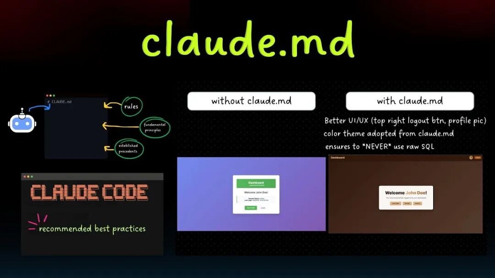

从事前端开发八年多。每天敲代码、调Bug、跟AI助手较劲，已经成了我的日常。以前用Claude Code写项目，经常出现这种情况：AI帮我生成了代码，我一看，逻辑没问题，但一跑就崩；或者我改了个小需求，它又把整个架构搅得乱七八糟。每次都要来回prompt十几次，效率低得我怀疑人生。
直到上周，国外大神分享了一个叫CLAUDE.md的文件，据说是Anthropic Claude Code的创建者Boris Cherny和团队的真实工作流精华。有人把他的多条内部分享线程整理成结构化文档，只要把这个文件丢进项目根目录，Claude就会像换了个人一样，思考方式、执行习惯全都对齐资深工程师的标准。

我当时抱着试试看的心态，把文件复制进去，重新开了一个中型项目。结果呢？三天时间，我一个人就把以前需要一周才能搞定的功能全部上线，Bug率直接腰斩。不是夸张，这东西真让我体会到了什么叫“AI不再是工具，而是靠谱的搭档”。
今天我就把这个CLAUDE.md的来龙去脉、每一部分的具体含义、实际落地方法，完整拆解给你。看完这篇文章，你不仅会明白为什么它能让人10x，还能立刻复制到自己的项目里用起来。准备好笔记，咱们开始。
一、CLAUDE.md到底是什么？为什么这么牛？
简单说，CLAUDE.md就是Claude Code（也就是code.claude.com）项目的“行为规范手册”。它不是普通的系统提示词，而是把Anthropic内部最顶尖的AI编码实践，浓缩成了一份可执行的规则文档。
Boris Cherny作为Claude Code的创建者，在内部多次分享他们团队每天真实使用Claude的工作流。有人把这些散碎的线程整理成Markdown，放到任意项目的根目录下。Claude Code会自动读取它，把这些规则当作自己的“企业文化”和“工作手册”。
核心价值有三点：
1. 让AI学会“先思考后动手”，不再一上来就狂敲代码； 2. 建立自改进机制，AI犯过的错，下次就不会再犯； 3. 模拟真实资深工程师的思考框架，让AI输出达到Staff Engineer级别。
用了它之后，你会发现：以前AI是“听话的实习生”，现在它变成了“能独当一面的Senior Dev”。
二、Workflow Orchestration：六大核心工作流，彻底重塑AI协作
这个部分是整个文件的灵魂，一共六条，每一条都直击AI编码的痛点。
1. Plan Node Default（默认进入规划模式）
任何非琐碎任务（超过3步，或者涉及架构决策），必须先进入Plan模式。
我以前的习惯是直接说“帮我实现用户登录”，结果AI直接甩出一堆代码，后面发现鉴权逻辑跟现有系统冲突。用了这条规则后，我现在第一句话永远是“先写详细Plan到tasks/todo.md”。Plan里要包含：功能边界、边缘case、与现有代码的交互点、预计改动范围。这样一来，后面的执行几乎零返工。
2. Subagent Strategy（子代理策略）
复杂问题不要让主Agent全包，果断扔给子代理。
比如做一个带实时聊天的后台，我会让一个子代理专门调研WebSocket方案，另一个调研数据库选型，主Agent只负责整合。上下文窗口干净了，专注度也上来了。Boris团队的经验是：复杂问题就多扔算力，用子代理并行攻克。
3. Self-Improvement Loop（自我改进循环）
这是最变态、最爽的一条！
用户每次纠正AI的错误，AI必须立刻把这个pattern更新到tasks/lessons.md里，写成“下次绝不再犯”的规则。
我第一次用的时候，AI把React Hook依赖顺序写错了。我纠正后，它不仅改了代码，还在lessons.md里加了一条：“使用useEffect时，必须把所有依赖显式列出，否则触发无限渲染”。第二次遇到类似场景，它主动提醒我检查依赖。几次下来，同一个错它再也没犯过。长期使用，这个文件会变成你和AI共同的“知识库”，AI的“智商”肉眼可见地提升。
4. Verification Before Done（交付前必须验证）
绝不标记任务完成，除非真正证明它能跑。
要求AI提供：diff对比、测试用例、日志截图、边缘case验证。还要自问：“Staff Engineer会点头吗？”
这条规则直接把“看起来能跑”变成了“确实没问题”。
5. Demand Elegance（平衡地追求优雅）
非关键改动别过度设计，但明显hacky的方案必须重构。
AI会主动问：“我知道现在所有上下文，有没有更优雅的写法？”简单Bug就别折腾，复杂逻辑必须追求简洁。
6. Autonomous Bug Fixing（自主Bug修复）
用户扔个Bug报告，AI二话不说直接定位、修复、验证。
它会自己去看日志、跑测试、修CI。用户零上下文切换。这才是真正的“AI替你干活”。
三、Task Management：六步任务闭环，项目管理像开挂
1. 先把Plan写到tasks/todo.md，用可勾选清单； 2. 实施前再确认一遍； 3. 每完成一项就打钩； 4. 每步给出高层总结； 5. 完成后在todo.md加Review小节； 6. 任何纠正都更新lessons.md。
我现在每个新功能都严格走这六步，项目文档自动生成，交接给别人看一眼todo.md就知道进度和决策过程。
四、Core Principles：三条底层哲学，决定AI的上限
• Simplicity First：改动越小越好，只碰必要代码； • No Laziness：必须找到根因，绝不临时修复，要按Senior标准来； • Minimal Impact：改动范围最小化，避免引入新Bug。
这三条听起来简单，做起来却能把AI从“聪明的新手”变成“靠谱的老兵”。
五、如何零成本落地？三分钟上手指南
1. 在项目根目录新建CLAUDE.md文件； 2. 把下面完整内容复制进去（我已帮你整理好最新版）：
## Workflow Orchestration
### 1. Plan Node Default
- Enter plan mode for ANY non-trivial task (3+ steps or architectural decisions)
- If something goes sideways, STOP and re-plan immediately - don't keep pushing
- Use plan mode for verification steps, not just building
- Write detailed specs upfront to reduce ambiguity
### 2. Subagent Strategy
- Use subagents liberally to keep main context window clean
- Offload research, exploration, and parallel analysis to subagents
- For complex problems, throw more compute at it via subagents
- One tack per subagent for focused execution
### 3. Self-Improvement Loop
- After ANY correction from the user: update `tasks/lessons.md` with the pattern
- Write rules for yourself that prevent the same mistake
- Ruthlessly iterate on these lessons until mistake rate drops
- Review lessons at session start for relevant project
### 4. Verification Before Done
- Never mark a task complete without proving it works
- Diff behavior between main and your changes when relevant
- Ask yourself: "Would a staff engineer approve this?"
- Run tests, check logs, demonstrate correctness
### 5. Demand Elegance (Balanced)
- For non-trivial changes: pause and ask "is there a more elegant way?"
- If a fix feels hacky: "Knowing everything I know now, implement the elegant solution"
- Skip this for simple, obvious fixes - don't over-engineer
- Challenge your own work before presenting it
### 6. Autonomous Bug Fixing
- When given a bug report: just fix it. Don't ask for hand-holding
- Point at logs, errors, failing tests - then resolve them
- Zero context switching required from the user
- Go fix failing CI tests without being told how
## Task Management
1. **Plan First**: Write plan to `tasks/todo.md` with checkable items
2. **Verify Plan**: Check in before starting implementation
3. **Track Progress**: Mark items complete as you go
4. **Explain Changes**: High-level summary at each step
5. **Document Results**: Add review section to `tasks/todo.md`
6. **Capture Lessons**: Update `tasks/lessons.md` after corrections
## Core Principles
- **Simplicity First**: Make every change as simple as possible. Impact minimal code.
- **No Laziness**: Find root causes. No temporary fixes. Senior developer standards.
- **Minimal Impact**: Changes should only touch what's necessary. Avoid introducing bugs.3. 打开Claude Code，新建或进入项目，告诉它：“从现在开始，所有操作都严格遵循CLAUDE.md中的规则”。
搞定！后续交互就会自动带上这些规范。
六、真实效果对比：用了和没用的天壤之别
没用前：一个登录模块我花了4小时，返工3次，最后还有安全隐患。
用了后：同一个模块，Plan 15分钟，子代理调研20分钟，编码40分钟，验证30分钟，总共1小时45分，零返工，还顺便优化了JWT过期策略。
更重要的是，lessons.md越积越多，AI对我的代码风格、业务逻辑越来越懂。三个项目下来，它已经能主动提出“这个地方跟上个项目你改过类似逻辑，要不要复用那个抽象？”这种建议。
七、最后想说的话
2026年的编程，已经不是人和代码的较量，而是人和AI协作的艺术。CLAUDE.md把Anthropic最顶尖的协作经验，免费送到了每个开发者手里。它不是让你偷懒，而是让你把精力真正花在有创造力的地方。
如果你每天都在用Claude、Cursor、Windsurf等AI编码工具，强烈建议立刻试试这个文件。试完后，欢迎在评论区告诉我你的感受：Bug少了多少？时间省了多少？最让你惊喜的变化是什么？
把这篇文章转给你的程序员朋友吧，也许下一个10x工程师，就是他。
最后，记得关注我，持续分享更多硬核AI开发干货。我们下期见！